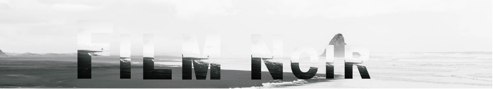
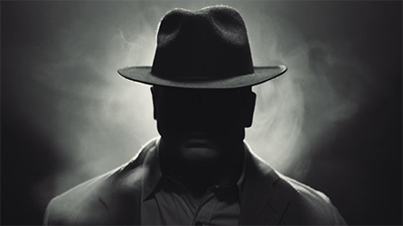

<!DOCTYPE html>
<html lang="lv"></html>
    <head>
        <meta charset="utf-8" /><meta name="viewport" content="width=device-width, initial-scale=1.0" /> 
          <title>Film noir</title>
        </head>
        
  <header>
    
      </style>
    <div class="header">
    </div>
       <h1> </h1>
    </div>
      
          </header>

        
          <body>
            
            <link rel="stylesheet" href="slideshow-addon/slideshow-addon.css" type="text/css">
<script type="text/javascript" src="slideshow-addon/slideshow-addon.js"></script>


            <head>

            </head>
         <main>
              <body>
          
          
       
          
        <style>
            .myDiv {
          
              text-align: center;
            }
            </style>
            </head>
            <body>
                <style>
                    body {
                      background-image: url("img/film.jpg")
                    }
                    </style>
            
            <div class="myDiv">
              <h1>No franču valodas melnā filma</h1>
              <head>
                <style>
                p.impact {
                  font-family: garamond, sans-serif; 
                }
                </style>

                <style>
                  h1 {
                    background-color: black;
                    color:white;
                  }
                </style>
                <body>
                </div>
          
                
                <h1></h1>
                <style>
         <style>
                  .center {
                    margin: auto;
                    width: 60%;
                    border: 3px solid #ffffff;
                    padding: 10px;
                  }
                  </style>
<main>
<div class="center">
  <p><b> </b>Mūsdienās jēdziens "film noir" tiek lietots arī kā īpaša žanra apzīmējums. Film noir filmas raksturo līdzīga tematika, stilistiskie un naratīva veidošanas paņēmieni, 
    kā arī varoņi ­(liktenīgās sievietes, privātdetektīvi, cilvēki, kas nonāk fatālu apstākļu slazdā.).</p>
</div>         

            
                <style>
                  .center {
                    margin: auto;
                    width: 60%;
                    border: 3px solid #ffffff;
                    padding: 10px;
                  }
                  </style>

<div class="center">
  <h3>Žanra izcelšanās</h3>
  <p><b> </b>Film noir ir retrospektīvi radīts jēdziens – to 1946. gadā pirmo reizi lietoja franču kritiķi Nino Franks (Nino Frank) un Žans Pjērs Šartjē (Jean-Pierre Chartier),
    attiecinot to uz Amerikas Savienotajās Valstīs (ASV),
    Holivudā tapušo filmu kopumu (1941–46), kas Francijā nonāca jau pēc Otrā pasaules kara. Filmu “Maltas vanags” (The Maltese Falcon, 1941), 
   “Slepkavība, mana dārgā” (Murder, My Sweet, 1944), “Laura” (Laura, 1944), “Dubultā apdrošināšana“ (Double Indemnity, 1944) un citu tematiskā un stilistiskā līdzība, to depresīvās, 
   eksistenciālās noskaņas, detektīvžanra un nozieguma elementu klātbūtne, arī līdzīgie varoņi mudināja franču kritiķus radīt jēdzienu “film noir”.</p>
   <br>Film noir žanrs ir saistāms ar pesimisma, depresīvisma, neuzticības, vilšanos un cinisma atmosfēru, kas bija 
  raksturīga amerikāņu sabiedrībai Otrā 
  pasaules kara laikā un pēckara gados (1939—1945), kas saistāms 
  ar Amerikas ekonomisko krīzi, atomkaru, sabiedrības bailēm un neziņu</br>
  <h3>Žanra attīstība</h3>
  <br>No 1941. līdz 50. gadu vidum tapušas vismaz 250 Holivudas filmas, kuras veido film noir klasisko mantojumu. Šīs filmas ir gan mazbudžeta Holivudas produkcija 
  (tā dēvētās B kategorijas filmas), gan lielo Holivudas studiju fimas ar 
  populāriem aktieriem. Film noir elementu intensitāte šajās filmās ir ļoti atšķirīga. Film noir vidū ir gan ekstrēmi paraugi, gan filmas, kas respektē 
  Holivudas klasiskā stila kanonu, izmantojot tikai atsevišķus film noir raksturīgos 
  elementus (visbiežāk, ekspresīvo apgaismojumu). Tomēr tieši ar film noir saistāmi radikālākie 
  formas meklējumi Amerikas kino 40.–50. gadu vēsturē.</br>


<div class="myDiv">
  <h1>Film noir raksturoms</h1>
  <head>
    <style>
    p.impact {
      font-family: Arial, Helvetica, sans-serif; 
    }
    </style>

    <style>
      h1 {
        background-color: black;
        color:white;
      }
    </style>
    <body>
    </div>
  
                <ol>
                  <li>Detektīvu birojs, neatrisināti noziegumi, kā arī valdzinošas sievietes.</li>
                  <li>Iezīmē Amerikas gangsterstilu, kā arī attēlo sabiedrības sociālās problēmas.
                  </li>
                  <li>Mīlestības sižeta līnijas iezīmēšana.</li>
                  <li>Policijas korumpētība.</li>
                  <li>Psiholoģiski sarežģīti tēli.</li>
                  <li>Tēli fatāliska izskata un norobežojušies no sabiedrības.</li>
                </ol>


<div class="center-slideshow">

  <form name="slideforma">
  
  <!-- EDIT THIS AREA TO ADD AND REMOVE PICTURES FROM THE SLIDESHOW -->
  
  <input type="hidden" value="slideshow-addon/film1.jpg" name="slide" onchange="change();">
  <input type="hidden" value="slideshow-addon/film2.jpg" name="slide" onchange="change();">
  <input type="hidden" value="slideshow-addon/film3.jpg" name="slide" onchange="change();">
  <input type="hidden" value="slideshow-addon/film4.jpg" name="slide" onchange="change();">
  <input type="hidden" value="slideshow-addon/film5.jpg" name="slide" onchange="change();">
  <input type="hidden" value="slideshow-addon/film6.jpg" name="slide" onchange="change();">
  
  <!-- THE NEXT LINE IS THE STARTING SLIDE -->
  
  <br>
  
  <!-- START SLIDESHOW BUTTONS -->
  <table class="slide-buttons"><tbody><tr><td>
  <input type="button" onclick="previous();" value="◄" title="Previous" class="button-slides" onmouseover="this.className='buttonon-slides'" onmouseout="this.className='button-slides'">
  </td><td>
  <input type="button" name="slidebutton" onclick="ap(this.value);" value="AutoPlay" title="AutoPlay" class="button-slides" onmouseover="this.className='buttonon-slides'" onmouseout="this.className='button-slides'">
  </td><td>
  <input type="button" onclick="next();" value="►" title="Next" class="button-slides" onmouseover="this.className='buttonon-slides'" onmouseout="this.className='button-slides'">
  </td></tr></tbody></table>
  <!-- END SLIDESHOW BUTTONS -->
  
  </form>
  </div>
  <h3> Filmas vizuālais stils </h3>
                 <ul>
                  <li>Kontrastu iezīmes, dziļi plāni, kas aizgūts no vācu ekspresionisma.</li>
                  <li>Vizuālas konvecijas, ikoniskas zīmju sistēmas.</li>
                  <li>Ekspresīvs vizuālais stils.</li>
                  <li>Melnbalts filmas noformējums.</li>
                  <li>Nelineārs naratīvs, retrospekcijas.</li>
                  <li>Privāto detektīvu kabineti ar žalūzijām pie logiem, kas rada specifiski krītošas ēnas.</li>
                </ul>

        
              <style>
                .button {
                  background-color: #000000;
                  border: none;
                  color: white;
                  padding: 18px 34px;
                  text-align: center;
                  text-decoration: none;
                  display: inline-block;
                  font-size: 18px;
                  margin: 4px 2px;
                  cursor: pointer;
                }
              </style>
            </head>
            <body>
              <a href="https://www.youtube.com/watch?v=K77aPil7btM" class="button">Detalizēts izklāst par film noir attīstību un žanra iezīmēm</a>
              
     <style>
footer {
  text-align: center;
  padding: 3px;
  background-color: rgb(0, 0, 0);
  color: white;
}
 </style>
</main>
           <footer>
            <p> ©Author: Agnete Ālere<br>
            <script>
              document.write('<a href="' + document.referrer + '">Uz sākumu</a>');
            </script>
          </footer>
     </body>    
    
          